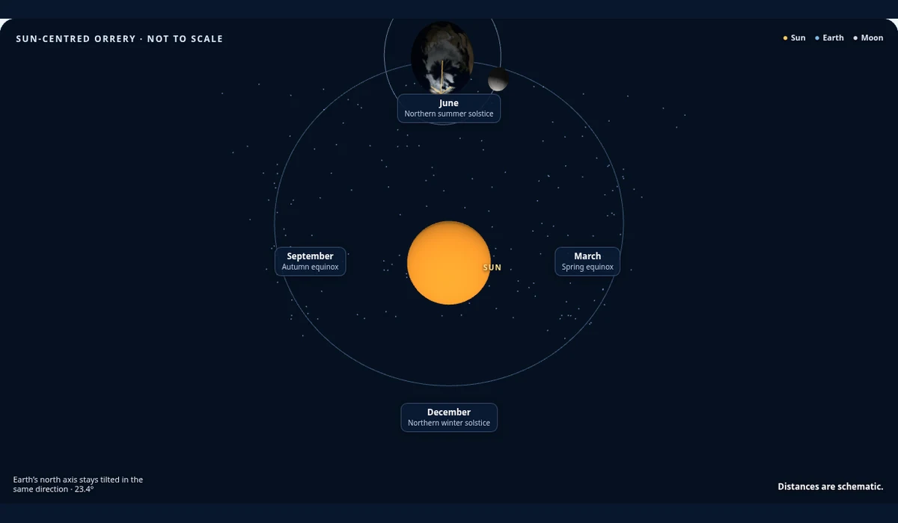
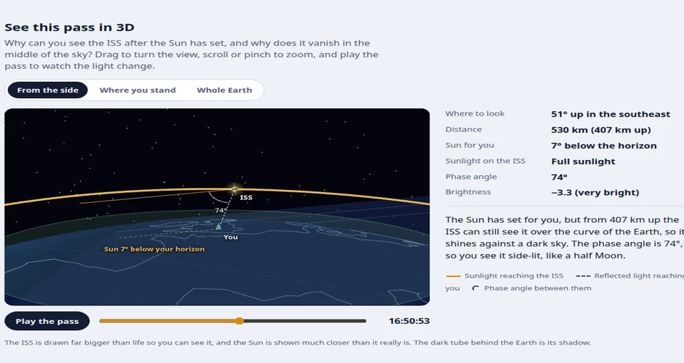

Astronomy tools
Welcome to Watling Astronomy Club
Here are our tools. Choose one to explore.
Explore the tools

Seasons and phasesEarth, Moon and Sun
Follow Earth’s year and the Moon’s phases.
Open the model → Size and scale
Size and scaleThe Scale of the Universe
Zoom from tiny particles to the observable universe.
Start zooming → Exoplanets
ExoplanetsExoplanet Drawing Board
Browse and compare sketches of real planetary systems.
Explore the board →
SatellitesISS Pass Predictor
Find when the International Space Station may pass overhead.
Find a pass → Mission journeys
Mission journeysMission Explorer
Replay seven missions and their stories in 3D.
Explore the missions →